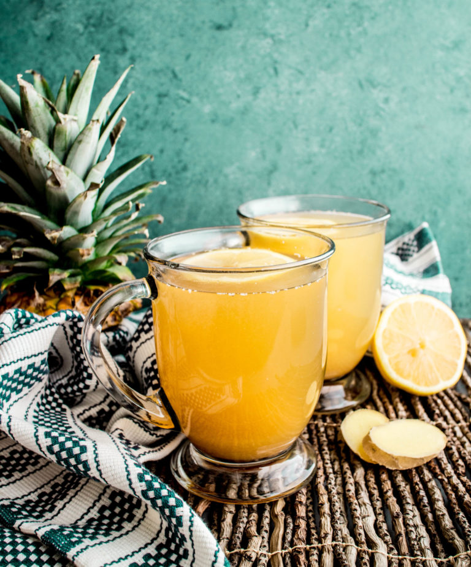

Pineapple Ginger Tea Recipe
Description
This is a simple recipe for a healthy, warming batch of ginger pineapple tea. It's a great way to make use of pineapple rinds. Serving size is about 4 cups. It takes about 10-30 minutes in total depending on how strong you want your tea to be.
Ingredients
- Pot
- Tea strainer
- Mug
- 4 cups of water
- Rinds from one pineapple
- A few inches of ginger, maybe a tablespoon or two
- Honey if you want it sweetened
Steps
- Boil the water in the pot.
- While water is boiling, cut the pineapple rinds off of the pineapple and cut them into smmall strips, around 3 inches long and an inch wide.
- Mince the ginger or cut into small strips.
- Put the ginger and pineapple rinds in the water. You can put them in while the water is boiling or you can wait for the water to boil.
- Once water is fully boiling, turn down heat to maintain a simmer. Simmer covered or uncovered for at least 7 minutes, or as long as you prefer.
- Strain the tea into a large jar and pour individual servings as desired.
- Enjoy!